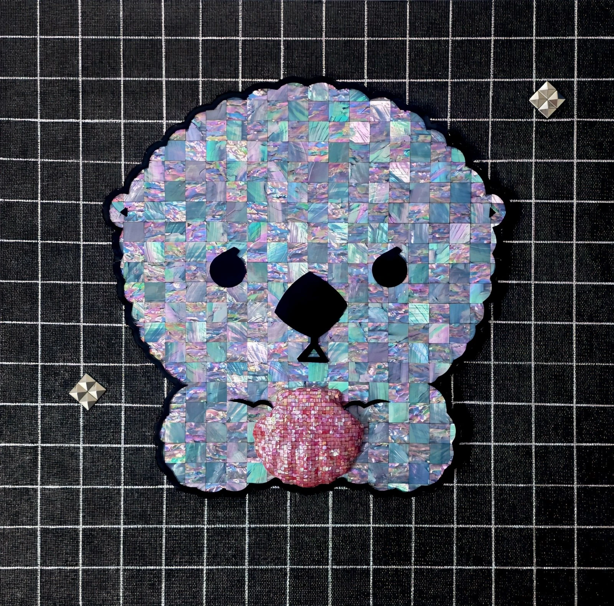

이 세계의 얼빵해달, 저작인접권자가 되었다!Spaced-out Sea Otter: Invoked as a Neighboring Rights Holder in An Other World
Spaced-out Sea Otter: Invoked as a Neighboring Rights Holder in An Other World이 세계의 얼빵해달, 저작인접권자가 되었다!
목심저피나전칠기(천연자개, 옻칠, 삼베 등) · 45 × 45 cm · 2026Traditional Korean najeonchilgi on a hemp-reinforced wood core (natural mother-of-pearl, lacquer, hemp, etc.) · 45 × 45 cm · 2026
웹소설적 상상력을 통해 이 세계로 소환된 얼빵해달은, 작가를 대리하는 '저작인접권자'라는 독창적 법적 지위를 획득했다. 멀티버스 세계관 속에서 실연자로서의 주체성을 확보한 작가의 페르소나(Persona)를 위트 있게 조명했다.Summoned into this world by the imaginative logic of a web novel, Spaced-out Sea Otter is granted an original legal status: neighboring rights holder, acting on the artist's behalf. Within a multiverse setting, the piece wittily reframes the artist's persona as a performer who has secured its own legal standing and agency.
전시 이력Exhibitions
- [예정] 2026.11.23 – 2026.11.29 나전칠기로 아트하는 法, 갤러리 비브, 서울, 대한민국[Upcoming] 2026.11.23 – 2026.11.29 Art by Law, in Najeonchilgi, Gallery VIV, Seoul, KR
- 2026.07.30 – 2026.08.02 어반브레이크 토이콘 서울 2026, 코엑스, 서울, 대한민국2026.07.30 – 2026.08.02 URBAN BREAK & TOYCON SEOUL 2026, COEX, Seoul, KR
- 2026.06.26 – 2026.06.29 CODE NAME: BLUE, 레온갤러리, 서울, 대한민국2026.06.26 – 2026.06.29 CODE NAME: BLUE, Leon Gallery, Seoul, KR
- 2026.04.10 – 2026.04.12 아트쇼핑, 루브르 카루젤, 파리, 프랑스2026.04.10 – 2026.04.12 Art Shopping, Paris, France
- 2026.03.20 – 2026.03.22 언노운바이브 더블룸, 신라호텔, 서울, 대한민국2026.03.20 – 2026.03.22 Unknown vibe the bloom, Shilla Hotel, Seoul
- 2026.02.05 – 2026.02.09 9인9색전, 갤러리가우디움, 서울, 대한민국2026.02.05 – 2026.02.09 Nine Artists, Nine Colors, Gallery Gaudium, Seoul, KR
- 2025.12.24 – 2025.12.28 서울아트쇼 2025, 코엑스, 서울, 대한민국2025.12.24 – 2025.12.28 SEOUL ART SHOW 2025, COEX, Seoul, KR